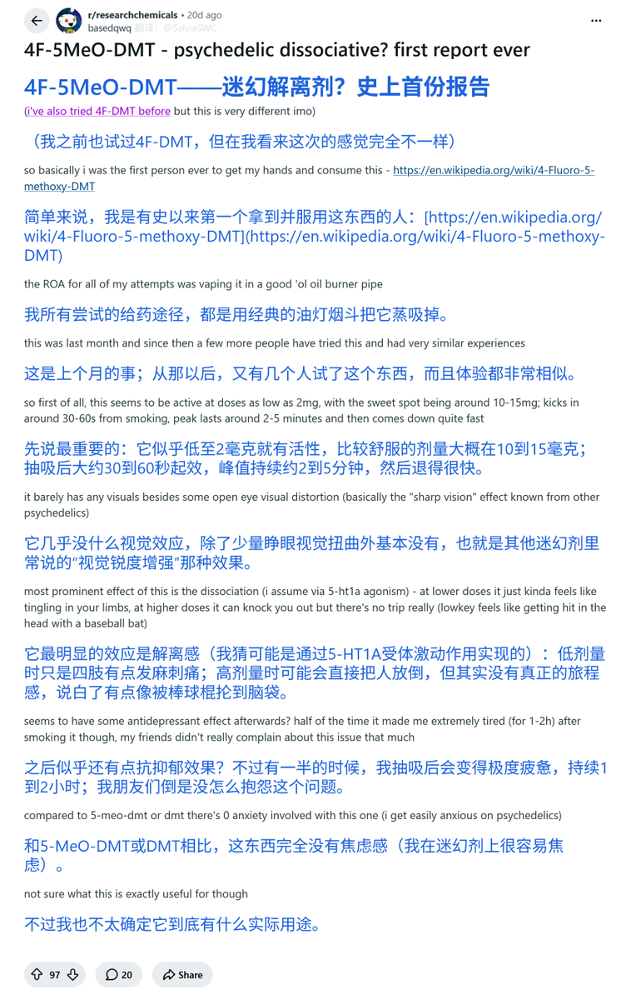
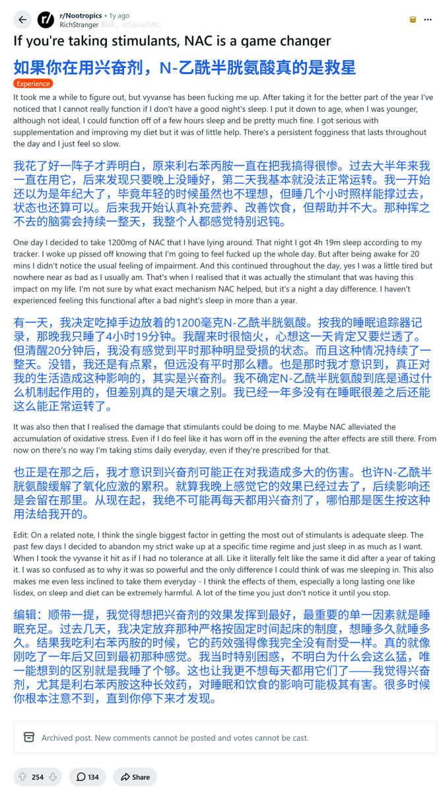

药物报告day19——新型双取代色胺类致幻剂4F-5MeO-DMT的首个报告
贴主称，这种物质没有焦虑感，也没有夸张的视觉幻觉，但是具有一定的解离感，药效结束后，还有抗抑郁的余晖，因此贴主称其为“迷幻解离剂”。
色胺类物质真是一个精品神药的宝库啊，窝野想吃喵🤤
文字版链接： https://t.co/l98WwygXkg

贴主称，这种物质没有焦虑感，也没有夸张的视觉幻觉，但是具有一定的解离感，药效结束后，还有抗抑郁的余晖，因此贴主称其为“迷幻解离剂”。
色胺类物质真是一个精品神药的宝库啊，窝野想吃喵🤤
文字版链接： https://t.co/l98WwygXkg


药物报告day18——NAC与兴奋剂的联用作用
“我”在前一天睡前服用NAC后，发现次日的Vyvanse药效大幅提升，感觉很有精神。
不过，评论区也有人指出，贴主是因为长期缺觉，才导致之前兴奋剂没有药效的。
因此，在对待药效时，我们要结合多种因素考虑，做到理性客观🤓
全文链接：https://t.co/YKPfu7HIl8 https://t.co/94INnYBoB3 https://t.co/znokYgSxJh
“我”在前一天睡前服用NAC后，发现次日的Vyvanse药效大幅提升，感觉很有精神。
不过，评论区也有人指出，贴主是因为长期缺觉，才导致之前兴奋剂没有药效的。
因此，在对待药效时，我们要结合多种因素考虑，做到理性客观🤓
全文链接：https://t.co/YKPfu7HIl8 https://t.co/94INnYBoB3 https://t.co/znokYgSxJh